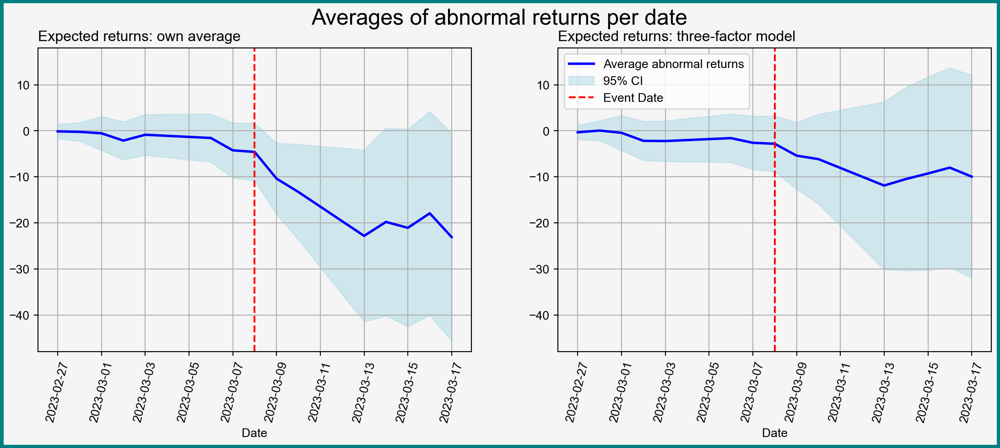

Then \(\widehat{AE}_{ES}\) consistent for causal parameters: \[
\widehat{AE}_{ES} \xrightarrow{p} \E[Y_{i1}^1- Y_{i1}^0] = \E[Y_{i2}^1- Y_{i2}^0]
\]
Regression Interpretation
Regression Setting
Can also connect \(\widehat{AE}_{ES}\) and OLS
Consider regressing \(Y_{it}\) on \((1, D_{it})\) where \[
\begin{aligned}
% Y_{it} & = \beta_0 + \beta_1 D_{it} + U_{it}, \\
D_{it} & = \begin{cases}
1, & t= 1 \\
0, & t =0
\end{cases}
\end{aligned}
\tag{2}\] and where we simply treat \((Y_{i1}, D_{i1})\) and \((Y_{i2}, D_{i2})\) as separate observations
Event Studies and OLS
Proposition 3 (\(\widehat{AE}_{ES}\) is OLS) For \(\beta_1\) of regression (2) \[
\widehat{AE}_{ES} = \hat{\beta}_1,
\] where \(\hat{\beta}_1\) is the estimator of the coefficient on \(D_{it}\)
Can use all results developed for OLS for \(\widehat{AE}_{ES}\)
Event Study and Regression I
A way to think about regression in causal settings:
Write down the regression in terms of parameters of interest: e.g. let \[
\begin{aligned}
Y_{it} & = \beta_0 + \beta_1 D_{it} + U_{it},
\\
\beta_0 & = \E[Y_{i1}^0], \quad
\beta_1 = \E[Y_{i2}^1- Y_{i2}^0]
\end{aligned}
\]
Connect regression to potential outcomes: what is \(U_{it}\) in terms of potential outcomes? (exercise)
Event Study and Regression II
Let \(\bX_{it} = (1, D_{it})'\). Then
By properties of OLS know that OLS is consistent for \(\bbeta = (\beta_0, \beta_1)\) if
\(\E[\bX_{it}U_{it}] =0\)
\(\E[\bX_{it}\bX_{it}']\) invertible
So just need to check if this \(U_{it}\) satisfies \(\E[\bX_{it}U_{it}] =0\)
If yes, OLS can estimate average effects of interest
Remember: the OLS “model” and the underlying causal model are separate things! Here the causal model is “nonparametric”
Multiple Periods
Estimation and Causal Framework
Multiple Period Framework
Often have more than 2 periods of data
Want to use that data
New framework:
\(T\) periods in total
Treatment starts in period \(t_0\)
We see \(Y_{it}^0\) for \(t<t_0\) and \(Y_{it}^1\) for \(t\geq t_0\)
Expanded Regression
New variables for treatment: \[\small
D_{it, \tau} = \begin{cases}
1, & t= \tau, \\
0, & t\neq \tau
\end{cases}
\]
Can try similar regression: \[\small
Y_{it} = \beta_0 + \sum_{\tau = t_0}^{T} \beta_\tau D_{it, \tau} + u_{it}
\tag{3}\] Let \(\hat{\bbeta}=(\hat{\beta}_0, \hat{\beta}_{t_0}, \dots, \hat{\beta}_{T}\)) be the OLS estimator
OLS Estimator Expression
Fairly easy to show that \[
\begin{aligned}
\hat{\beta}_{\tau} & = \dfrac{1}{N} \sum_{i=1}^N Y_{i\tau} - \dfrac{1}{N(t_0-1)} \sum_{i=1}^N\left[ Y_{i1} + \dots + Y_{it_0-1} \right] \\
& \xrightarrow{p} \E\left[Y_{i\tau}^1 - \dfrac{1}{t_0-1}(Y_{i1}^0+ \dots + Y_{it_0-1}^0) \right]
\end{aligned}
\] More general version of the simple estimator of before
Dynamic Treatment Effects?
If \(\beta_{\tau}\) — average effect in period \(\tau\), then model (3) seems to allow for dynamic effects
Dynamic effects realistic: effect of treatment may change over time. Example: impact of job training on earnings:
Disappearing: you forget the training over time
Increasing: job training lets you jump to a higher position and gain experience quicker for the rest of your life
No Trends Rule Out Dynamics
Suppose that the no trends assumption holds \[
\begin{aligned}
& \E\left[Y_{i\tau}^1 - \dfrac{1}{t_0-1}(Y_{i1}^0+ \dots + Y_{it_0-1}^0) \right] = \E[Y_{it}^1 - Y_{it}^0]
\end{aligned}
\] The right hand side does not depend on \(t\)
No dynamic treatment effects under no trends!
Bad, since we want to allow for dynamics
Relaxing No Trends Assumption
Can relax no trends to only affect one of the potential outcomes — makes more sense to restrict the untreated outcome (why?)
Assumption (no trends in the baseline): \(\E[Y_{it}^0]\) does not depend on \(t\)
Recovering Dynamic Average Treatment Effects
Under assumption of no trends in the baseline: \[
\begin{aligned}
& \E\left[Y_{i\tau}^1 - \dfrac{1}{t_01}(Y_{i1}^0+ \dots + Y_{it_0-1}^0) \right] = \E[Y_{i \tau}^1 - Y_{i\tau}^0]
\end{aligned}
\]
Right hand side is average effect in period \(\tau\)
Can estimate \(V\) with \[
\hat{V} = \widehat{\var}(Z_i) = \dfrac{1}{N}\left(Z_i - \dfrac{1}{N}\sum_{j=1}^N Z_j \right)^2
\]
Estimated standard error of \(\hat{\beta}_{\tau}\): \[
\widehat{se}(\hat{\beta}_{\tau}) = \sqrt{ \dfrac{\hat{V}}{N} }
\]
Inference on Average Effects I
Can now construct confidence intervals and hypothesis tests about \(\E[Y_{i \tau}^1 - Y_{i\tau}^0]\). E.g. an asymptotic (1-)% confidence interval: \[
\widehat{CI}_{95\%} = \left[\hat{\beta}^{OLS}_{\tau} - z_{1-\alpha/2}\widehat{se}(\hat{\beta}_{\tau}), \hat{\beta}^{OLS}_{\tau} + z_{1-\alpha/2}\widehat{se}(\hat{\beta}_{\tau}) \right]
\] where the critical values \(z_{1-\alpha/2}\) come from the standard normal distribution \[
z_{1-\alpha/2}= \Phi^{-1}\left(1 - \dfrac{\alpha}{2} \right)
\]
Inference on Average Effects II
But what if we want to set the joint hypothesis \[
H_0: \beta_{\tau} = 0, \quad \tau = t_0, \dots, T
\]
This \(H_0\) is a hypothesis above a vector of effects
To write down a Wald test we need the joint asymptotic distribution of \(\hat{\bbeta}\)
Joint Asymptotic Distribution
Proposition 6 (Joint Asymptotics for Estimated Effects) Let
Assumption of no trends in the baseline hold
\((Y_{i1}, Y_{i2}, \dots, Y_{iT})\) be IID (over \(i\)) with finite second moments
Then \[ \small
\sqrt{N}(\hat{\bbeta} -\bbeta) \Rightarrow N(0, \avar(\hat{\bbeta}))
\]
Write down Wald statistic: \[ \small
W = N(\bR\hat{\bbeta}-\bq)'(\bR\widehat{\avar}(\hat{\bbeta})\bR')^{-1}(\bR\hat{\bbeta}-\bq)
\]
Compare to \((1-\alpha)\)th quantile of \(\chi^2_{T-t_0+1}\) distribution
Empirical Application
Formalizing the Application
Back to Empirical Application
Now let’s answer our empirical question — impact of the SVB collapse on stock returns of US financial institutions Context
We need
Outcome variables (which returns?)
Time context \(t\)
How to define the treatment
Some Finance Background: Abnormal Returns
In finance, usually work with abnormal returns \(AR_{it}\)(MacKinlay 1997)
Each stock \(i\) assumed to have a “normal” or “expected” return \(ER_{it}\) given market conditions on day \(t\) — everything “expected” by the market
\(AR_{it}\) — differences between actual return \(R_{it}\) and \(ER_{it}\): \[ \small
R_{it} = ER_{it} + AR_{it}
\]
Interest: Impact on Abnormal Returns
Outcome of interest: \(AR_{it}\)
Potential outcomes
\(d=0\)
\(d=1\)
Only idiosyncratic day-to-day shifts
Impact of SVB collapse + idiosyncratic movements
Assume that \(\E[AR_{it}^0] = 0\) and \(AR_{it}^0\) uncorrelated with broader market characteristics
Computing Expected and Abnormal Returns
Expected returns usually given by some model:
Simple mean model: let \(R_{it}\) be return of asset \(i\) on \(t\). Expected return \(ER_{it} = \E[R_{it}]\)
Factor models: \[\small
ER_{it} = f_i\left( \text{Some market characteristics on }t \right)
\] Example: \(ER_{it} = \bbeta_i'\bx_{t}\) where \(\bx_{t}\) includes market return on \(t\) (CAPM), or also small minus big, high minus low (Fama-French 3 factor)
Estimating Model Parameters
Can compute \(ER_{it}\) (and \(AR_{it}\)) if know model parameters
But how to compute parameters?
Select estimation window with \(D_{it}=0\). Then \[
R_{it} = \bbeta_i'\bx_t + AR_{it}^0, \quad \E[AR_{it}^0\bx_t] =0
\] Can consistently estimate \(\bbeta_i\) by regressing \(R_{it}\) on \(\bx_t\) (why — measurement error in dependent variable)
Computing Abnormal Returns
Work with estimated abnormal returns: \[
\widehat{AR}_{it} = R_{it} - \widehat{ER}_{it} = R_{it} - \hat{\bbeta}'\bx_t
\]
One issue: \(\widehat{AR}_{it}\) has measurement error. But
Measurement error in dependent variable not a problem if uncorrelated with covariates
If estimation window for \(\hat{\bbeta}\) large, measurement error likely small
Preparing Data
Define Time Frames
When does treatment turn on? What \(T\) to take?
Key public announcement — March 8, 2023 (our \(t_0\))
Market data for estimating \(ER_{it}\) — will use 3-factor Fama-French model
Can obtain ticker data from Yahoo Finance directly with yfinance package (abbreviated as yf)
<<<<<<< HEAD
=======
>>>>>>> block/panel
Expand for data call and data preparation
# Download the tickers and rename columns to only retain ticker namesstock_data = yf.download( tickers, start=start_date, end=event_date +4*event_window, progress=False,)stock_data = stock_data.iloc[:, 0:len(tickers)]stock_data.columns = ( stock_data.columns.map(lambda col: re.sub(r"[()\s']", "", col[1])))# Calculate daily returnsreturns = stock_data.pct_change().dropna()*100# Read in FF 3 factor daily dataff_path = Path() /'data'/'fama-french-3.csv'fama_french_data = pd.read_csv(ff_path).iloc[:, :-1]# Read the Date column as a date and set it as the indexfama_french_data["Date"] = pd.to_datetime( fama_french_data["Date"], format="%Y-%m-%d", )fama_french_data = fama_french_data.set_index("Date")# Merge returns and FF data, drop unnecessary datamerged_data = pd.concat( [returns, fama_french_data], axis=1).dropna(axis=0)
Estimating Abnormal Returns
Estimate outcome variable \(AR_{it}\) using Fama-French 3 market model:
Separately regress returns of each \(i\) on Fama-French factors over estimation window
Obtained fitted values (\(\widehat{ER}_{it}\))
Compute \(\widehat{AR}_{it}\)} and store
For contrast, also estimate mean model
<<<<<<< HEAD
=======
>>>>>>> block/panel
Expand for estimation of abnormal returns
# Create arrays to hold abnormal returns abnormal_returns_factor = pd.DataFrame()abnormal_returns_mean = pd.DataFrame() # Estimate abnormal returns for each for ticker in tickers:# Estimate the 3-factor abnormal returns X = merged_data.loc[ merged_data.index < event_date - event_window, ["Mkt-RF", "SMB", "HML"] ] y = merged_data.loc[ merged_data.index < event_date - event_window, ticker ] X = sm.add_constant(X) model = sm.OLS(y, X).fit() # Compute expected returns during the window X_event = ( merged_data.loc[ ((merged_data.index >= event_date - event_window) & (merged_data.index <= event_date + event_window)), ["Mkt-RF", "SMB", "HML"] ] ) X_event = sm.add_constant(X_event) expected_returns = model.predict(X_event)# Extract realized returns during the event event_data = ( merged_data.loc[ ((merged_data.index >= event_date - event_window) & (merged_data.index <= event_date + event_window)), ticker ] )# Abnormal returns are residuals abnormal_returns_factor[ticker] = event_data - expected_returns abnormal_returns_mean[ticker] = event_data - y.mean()
Visualizing Average Abnormal Returns

Figure 1: Averages of abnormal returns with 95% pointwise confidence intervals
There are (at least) two kinds parameters of interest:
Coefficients \(\beta_{\tau}\)
Cumulative effects up to each given day
Can compute cumulative effects and their variances as linear combinations of \(\beta_{\tau}\)
Computing Cumulative Effects
<<<<<<< HEAD
=======
>>>>>>> block/panel
Expand to see computation of cumulative effects
# Extract coefs and SEs of daily indicatorsdummy_coefficients = factor_model.params.iloc[1:] dummy_cov_matrix = factor_model.cov_params().iloc[1:, 1:] # Compute the cumulative effectscumulative_effects = dummy_coefficients.cumsum()# Compute the standard errors of the cumulative effectscumulative_se = np.zeros(len(cumulative_effects))for t inrange(1, len(cumulative_effects) +1):# Create a vector of ones up to day t and zeros afterwards indicator_vector = np.concatenate( [np.ones(t), np.zeros(len(cumulative_effects) - t)] )# Compute the SE of the cumulative effect cumulative_se[t -1] = np.sqrt( indicator_vector @ dummy_cov_matrix @ indicator_vector )# Create a DataFrame to store the resultsresults = pd.DataFrame( {"Day": factor_model.params.index[1:].map(lambda x: x[4:]),"Cumulative Effect": cumulative_effects,"SE": cumulative_se, })# Prepend day 0 as a referenceday0_df = pd.DataFrame( {"Day": 0,"Cumulative Effect": 0,"SE": 0, }, index = np.array(['day_0']))results = pd.concat([day0_df, results])# Construct confidence intervalsresults["ci_upper"] = results["Cumulative Effect"] +1.96* results["SE"]results["ci_lower"] = results["Cumulative Effect"] -1.96* results["SE"]# Set indexresults.index = abnormal_returns_mean.index[6:]# Print the resultsprint(results)
Freyaldenhoven, Simon, Christian Hansen, Jorge Pérez Pérez, and Jesse Shapiro. 2021. “Visualization, Identification, and Estimation in the Linear Panel Event-Study Design.” w29170. Cambridge, MA: National Bureau of Economic Research. https://doi.org/10.3386/w29170.
Huntington-Klein, Nick. 2025. The Effect: An Introduction to Research Design and Causality. S.l.: Chapman and Hall/CRC.
MacKinlay, A. Craig. 1997. “Event Studies in Economics and Finance.”Journal of Economic Literature 35 (1): 13–39.
Miller, Douglas L. 2023. “An Introductory Guide to Event Study Models.”Journal of Economic Perspectives 37 (2): 203–30. https://doi.org/10.1257/jep.37.2.203.